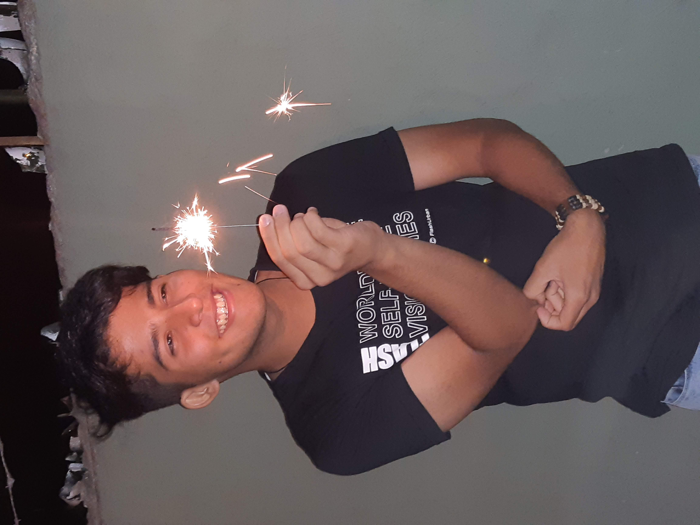

Quien Soy...
-
Me considero un chico alegre, ambicioso y resiliente.
Siempre enfocado en mi objetivo personal y tratar de transmitir una buena energía a los demás.
No tengo dificultades para adaptarme a cualquier ambiente laboral y me considero de rápido aprendizaje.
Experiencias Laborales
- Mostaza y Pan S.A. (Oct 2021 - Ene 2022)
- Williamsburg (Abr 2022 - May 2022
- Importainer S.A. (Jun 2022 - Jul 2022)
Información Academica
-
Escuela 17 de Agosto (2007 - 2020) "Bachiller en Comunicaciones"
Hobbies
- Aprender Idiomas
- Cocinar
- Taekwondo
- Jugar Videojuegos
Skills
- Ingles - Avanzado
- Coreano - Basico
- Office - Intermedio
¿Por qué elegiste la carrera?
Habia visto la publicacion en instagram despues de que mi hermano me haya comentado sobre el curso.
Considero que es una buena experiencia, además de que lo considero como un desafío hacia mí mismo.
Me tengo la confianza de que lo voy a lograr tarde o temprano. Espero consolidarme con el titulo de esta carrera.
Poder independizarme economicamente y obtener un buen empleo.